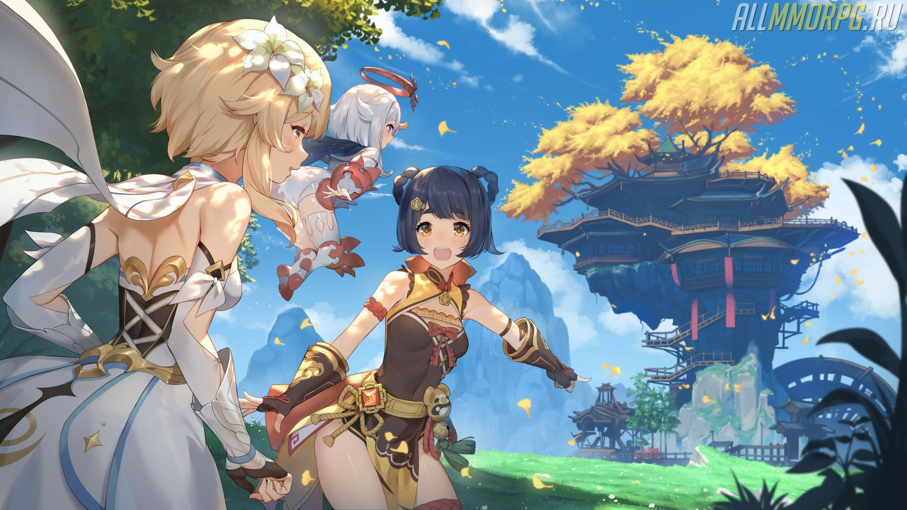
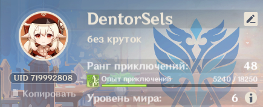
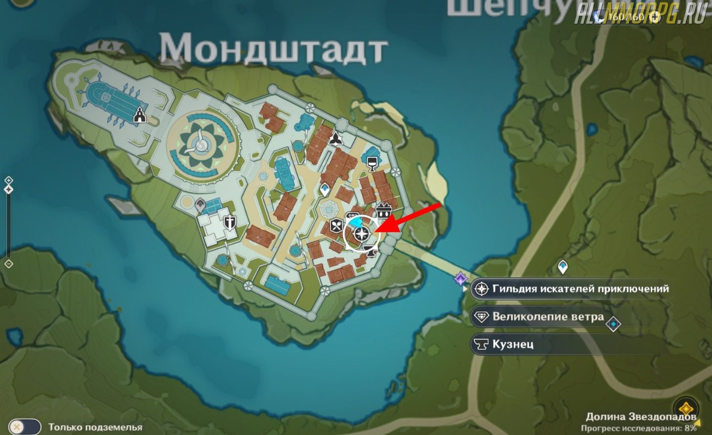
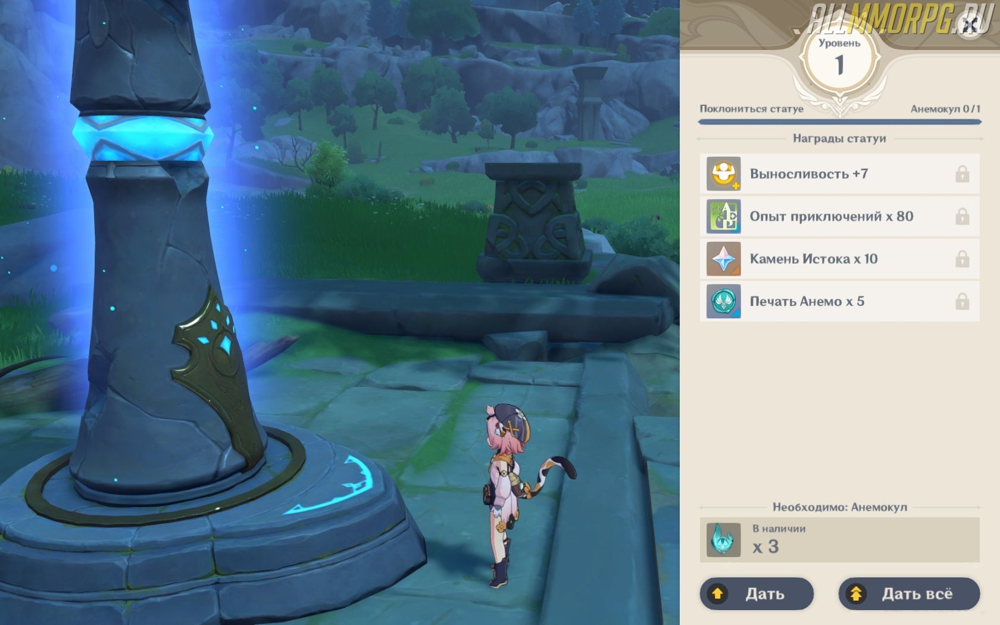
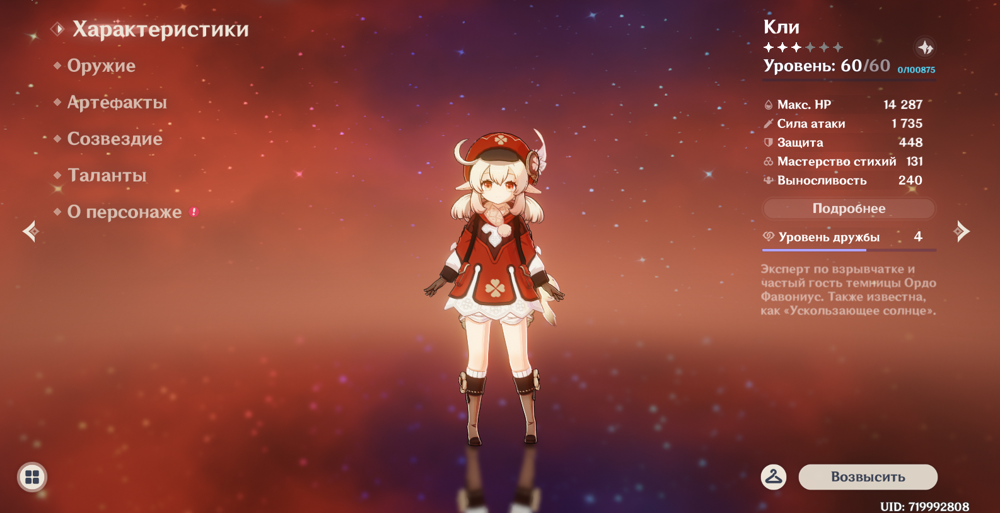
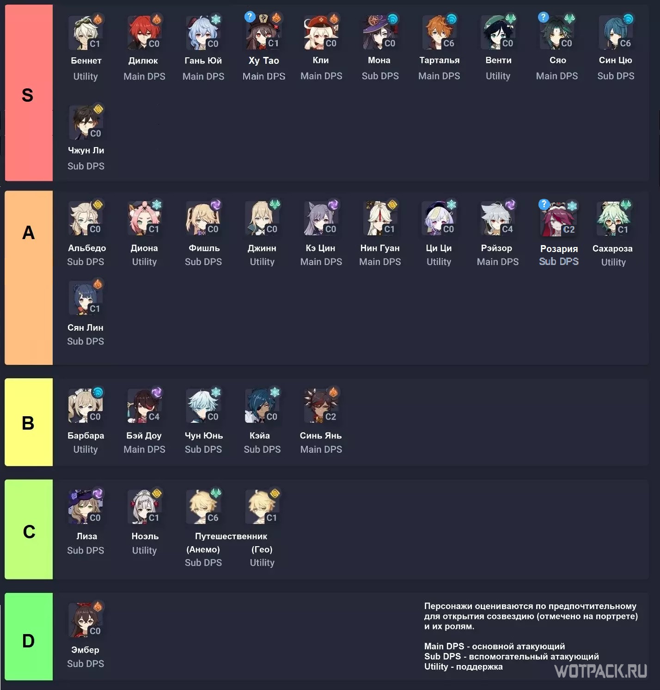
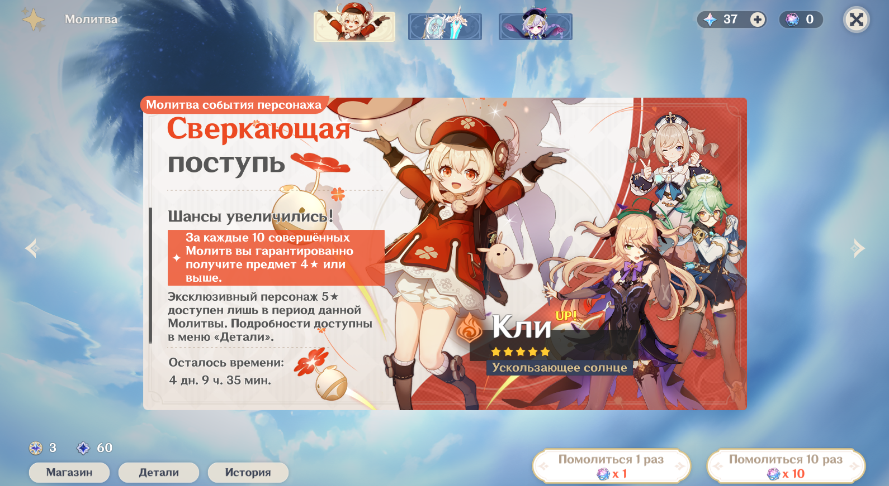
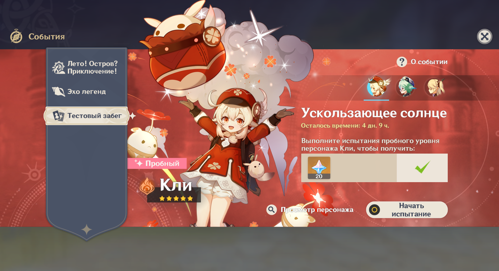
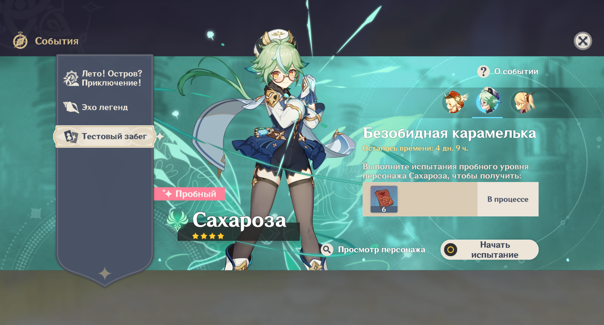
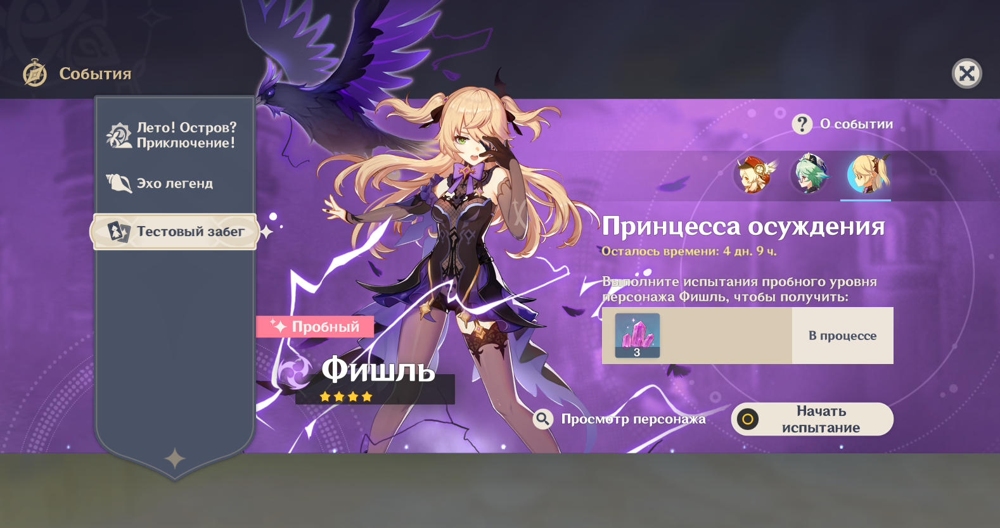

Genshin Impact: гайд по игре для новичков
Genshin Impact – увлекательная гача-игра в стиле аниме, которая ежедневно привлекает
сотни новых игроков разных возрастов. Назвать ее сложной нельзя, так как боевая механика
и другие игровые моменты максимально упрощены. Но, не смотря на это, все же есть те, кто
не может в ней разобраться. Если вы только начинаете играть в Genshin Impact, вам
нужно прочитать наш гайд для новичков, в котором предоставлена вся базовая
информация по игре.
1. Выбор платформы для игры в Genshin Impact
Выбирая платформу для игры вам в первую очередь нужно учесть функцию кросс-
платформенного сохранения, позволяющую загружать и использоваться сохранения на
различных устройствах. Благодаря уникальной системе обмена сохранениями вы можете
играть в Genshin Impact как на смартфоне/планшете, так и на ПК. Для этого вам нужно
всего лишь научиться передавать данные между устройствами.
Что нужно делать, чтобы загрузить сохранение с другой платформы:
- Нажмите на значок, который находится справа внизу на экране;
- Заполните поля с именем пользователя и паролем от учетной записи, с которой вы хотите загрузить сохранение;
- Дождитесь синхронизации и входите в игру.
Как работает система сохранений? Все очень просто. Весь ваш игровой процесс
привязывается к учетной записи, а не к устройству, на котором вы играете.
Обратите внимание: если вы играете на PS4 или Switch, то воспользоваться функцией
кросс-платформенного сохранения не сможете.
2. Вся информация о рангах приключений
Самое главное, чему вы посвятите большую часть своего времени, играя в Genshin Impact –
это прохождение квестов. Вам нужно как можно быстрее завершить основную цепочку
заданий от архонта, чтобы накопить достаточно опыта приключений. Чем больше опыта вы
наберете, тем быстрее повысите свой ранг приключений.
Для чего нужны ранги приключений:
- Повышение уровня мировой добычи;
- Разблокировка максимальных уровней для героев и снаряжения
- Получение доступа к таким функциям как многопользовательский режим и ежедневные миссии;
- Открытие большего количества объектов в поселениях, которые в будущем будут полезны.
Первая цель новичка – получение 12 ранга приключений
По мере повышения ранга приключений игрок получает доступ к новым функциям. Ваша
первая задача – получить 12 ранг, чтобы открыть ежедневные миссии. Они представляют
собой квесты, которые обновляются каждый день (в некоторых играх их называют
дейликами). За их выполнение вам дадут большое количество опыта приключений.
| Ранг приключений | Награда |
|---|---|
| 12 | Ежедневные миссии: задания с ежедневным сбросом, за которые полагается награда в виде опыта приключений и материалов. |
| 14 | Экспедиции: позволяют отправлять героев, которые не входят в собранную вами группу, на задания. С экспедиций герои приносят различные материалы и еду. |
| 16 | Многопользовательский режим: позволяет играть с другими игроками в режиме онлайн. |
| 20 | Повышение уровня мировой добычи (1): увеличиваются уровни врагов и редкость добычи. |
| 25 | Повышение уровня мировой добычи (2): увеличиваются уровни врагов и редкость добычи. |
Чтобы получить награды за ранги приключений, обратитесь к Катерине, Секретарю
гильдии искателей приключений. Она находится в Мондштадте и отмечена на карте
четырехконечной звездой (см. скриншот ниже).
3. Что такое «анемокулы» и зачем они нужны
Анемокулы – это предметы, которые используются в качестве подношения для Статуи Семи
Архонтов. Этот редкий ресурс можно найти в открытом мире в одной из 65 точек на карте.
За поклонение Статуи Семи Архонтов полагается неплохая награда:
- Выносливость;
- Опыт приключений;
- Камень Истока;
- Печать Анемо.
На скриншоте ниже показано, сколько и чего вы получите, если отдадите Статуе Семи
Архонтов один анемокул.
Где найти анемокулы
Анемокулы – это объекты, которые отображаются на карте только в том случае,
если вы подошли к ним слишком близко. Нашли анемокул? Сразу же заберите ее, иначе
она пропадет.
Разработчики игры, учитывая ценность этих предметов, сделали так, что найти их довольно
трудно. Оно и ясно, почему. Если бы анемокулы валялись повсюду, никакой ценности они бы
не представляли. Чтобы найти место спавна (появления) анемокул, воспользуйтесь
интерактивной картой Genshin Impact.
4. Путевые точки телепортации
Игровой мир Genshin Impact огромный и чтобы быстро перемещаться из одного места в
другое, вам необходимо открыть путевые точки. Они представляют собой небольшие столпы,
с которыми можно взаимодействовать. Если вы разблокируете точку телепортации, столп
станет синим.
Как быстро перемещаться по миру:
- Откройте карту (клавиша М по умолчанию);
- Найдите на карте место для быстрого перемещения (значок );
- Наведите мышкой на значок путевой точки, к которой вы хотите телепортироваться;
- Нажмите «Телепорт».
Это важно:мы рекомендуем вам уделить время на разблокировку путевых точек,
расположенных в труднодоступных местах, например, на высоких горах, башнях и т. д. Даже
если вам они сейчас не нужны, все равно разблокируйте их. Возможно, эти путевые точки
понадобятся вам в будущем.
5. Как сделать героев сильнее в Genshin Impact
Чтобы стать сильнее в игре, получить доступ к улучшенной добыче, сложным испытаниям и
другим возможностям, вам нужно увеличить общий рейтинг мощи. Сделать это можно
следующими способами:
- Усиление оружия;
- Развитие героев;
- Получение и улучшение артефактов.
Особенности развития героев
В таблице ниже представлены основные способы развития любого героя, который
находится в вашей коллекции.
| Способ развития | Пояснение |
|---|---|
| Повышение уровня | Повышение уровня героя усиливает его характеристики. Чтобы поднять уровень героя, используйте предметы опыта и убивайте противников. |
| Созвездие | При применении «Стеллы Фортуны», предмета, который выдается в качестве компенсации за получение дубликата героя, вы можете усилить конкретного героя до шести раз. Конечно, это сложный способ развития, но он довольно эффективный и дает хорошие бонусы к способностям. |
| Таланты | Усиливают атаки героя и делают его намного сильнее. Требуют наличия «Возвышения». |
| Возвышение | Чтобы повысить уровень персонажа на максимум и воспользоваться функцией «Возвышение», вам потребуется добыть определенные материалы и достичь предельного ранга приключений. |
Развивайте только одного персонажа в начале игры
Многие игроки считают, что лучше всего прокачать всех персонажей понемногу, чем
вкладывать все ресурсы в развитие одного героя. На самом деле это в корне неправильное
решение. Начав развивать всех героев сразу, вы не повысите общую мощь группы. Все герои
будут немного прокачаны, но на деле окажутся слабыми.
В начале игры вы должны прокачивать только одного персонажа с атакующей
ролью. С ним одним можно пройти начальный контент без необходимости качать других
героев. Кого прокачать в первую очередь? Мы советуем качать базового героя –
Путешественника. Остальные герои, которых вы получаете по мере прохождения сюжетной
кампании, рано или поздно будут заменены другими, более сильными, а Путешественник
останется полезным на всех этапах игрового процесса, поэтому сконцентрируйтесь на нем.
Система улучшения оружия
В целом, улучшение оружия ничем не отличается от развития героев.
| Способ улучшения | Пояснение |
|---|---|
| Повышение уровня | С каждым уровнем общие характеристики оружия увеличиваются. Чтобы получить опыт для меча, лука, посоха и проч., собирайте материалы или используйте другое оружие в качестве улучшения. |
| Возвышение | По достижению максимального опыта оружия вы сможете воспользоваться «Возвышением». Функция доступна на последнем ранге приключений. |
| Повышение квалификации | Вы можете 5 раз улучшить оружие, используя материалы. |
Обратите внимание:на ранних этапах игры заниматься улучшением оружия нет смысла.
Это просто пустая трата времени. Если вы новичок, сосредоточьтесь на других аспектах игры.
Однако если вы все же хотите заняться апгрейдом вооружения, улучшайте только одно
оружие, а не все сразу.
Подробнее об артефактах
Артефакты – это подобие аксессуаров для героев, которые облают бонусами к
характеристикам. У каждого героя имеется по 5 слотов для различных артефактов (по 1 на
каждый слот). В отличие от оружия и героев, уровень этих предметов можно поднять
только путем «вливания» в них других артефактов.
Пояснения по слотам для артефактов
| Значок | Название слота | Эффект |
 | Корона разума | Случайным образом влияет на показатели атаки, запаса здоровья, защиты, физического и стихийного урона. |
 | Кубок пространства | Случайным образом влияет на показатели атаки, запаса здоровья, защиты, бонуса физического урона и мастерство стихий. |
 | Пески времени | Увеличивает рейтинг защиты героя. |
 | Перо смерти | Повышает силу атаки героя. |
 | Цветок жизни | Увеличивает запас здоровья героя. |
Сетовые бонусы артефактов
Собрав несколько предметов из комплекта артефактов, вы получаете бонус к
характеристикам. Например, если на начальном этапе игры вы наденете на одного героя 2
предмета из комплекта «Целитель», то объем получаемого им исцеления увеличится на 20%.
А если надеть 4 предмета из комплекта «Целитель», то герой получит второй бонус –
использование взрыва стихий восстановит 20% запаса здоровья.
Внимание:в начале игры старайтесь надевать комплекты артефактов, чтобы усилить героев
и облегчить прохождение сюжетной кампании.
Где взять артефакты?
Артефакты выдаются в качестве награды за различные задания, создаются самим игроком и
выпадают в качестве случайной добычи из сундуков.
Нужно ли повышать уровень артефактов в начале игры?
Мы не рекомендуем акцентировать внимание на повышении уровня артефактов в
начале игрового процесса. Оставьте это занятие на потом. Самое правильное решение –
копить артефакты, а после использовать их в качестве материалов для апгрейда артефактов с
3 звездами и выше.
6. Выбор персонажей и сбор группы
Все герои в Genshin Impact условно делятся на категории (тиры) по степени эффективности и
мощности:
- Тир S– Самые сильные герои в игре;
- Тир A– Герои, которые немного слабее, чем в Тире S. Могут с легкостью заменить лучших героев;
- Тир B– Средние по мощности герои;
- Тир C – Слабые герои в игре;
- Тир D – Самые слабые и бесполезные герои.
На скриншоте ниже представлены все персонажи, которые есть в Genshin Impact на данный
момент, рассортированные по категориям.
Как правильно собрать группу в Genshin Impact
Как говорилось выше, на ранних этапах игры пройти сюжетные квесты можно с помощью 1
персонажа – Путешественника. Если вы часто сталкиваетесь с проблемами во время
выполнения основных квестов, соберите группу из персонажей с разным типом
стихий и оружием. Это сделает команду сильнее и ускорит прохождение сюжетной
кампании, даже если все герои не особо сильные.
Подробнее о комбинации стихий (элементов)
Элементальные реакции / комбо – это особые эффекты, которые активируются при
поражении противников серией различных стихийных атак. Например, если один герой
наносит цели урон от молнии, а после другой атакует ее с помощью навыков огня,
срабатывает эффект «Перезагрузка», формирующий сильный взрыв, наносящий АОЕ-урон и
поджигающий врага.
Проще говоря, комбинируя героев различных стихий вы будете более эффективно
расправляться с врагами и пройдете сложный контент без особых проблем.
Рекомендации по сбору группы
В вашей команде должны быть герои следующих ролей:
- Первый второстепенный герой (поддержка);
- Второй второстепенный герой (поддержка);
- Герой-целитель;
- Атакующий герой (ДПС).
В начале игры вы можете формировать группу из любых героев, которые есть у вас в
коллекции и подходят на эти роли. В будущем вам нужно их заменить более сильными – из
тир-листа А или B (в идеале из тир-листа S, но добыть их очень сложно).
7. Что такое молитвы и для чего они нужны
Молитвы – это гача-система, присущая китайским играм. Используя ее, вы получаете
шанс добавить в свою коллекцию редкого персонажа или рандомные (случайные) предметы.
Чтобы помолиться, вам нужно нажать на иконку в виде звезды (находится справа
вверху). В открывшемся окне молитв выберите ту, на которую у вас есть валюта, и надейтесь,
что вам выпадет что-то хорошее.
Виды молитв
В Genshin Impact есть несколько видов молитв, представленных в виде баннеров:
- Молитва новичка. Доступна для всех новых персонажей и активируется за «Судьбоносные встречи» (1-10 шт.) или Камень Истока (160-1600 шт.). Если вы помолитесь 10 раз, то со 100% вероятностью получите случайного героя с 4 звездами;
- Молитва событий оружия. Действует в течение определенного времени и предлагает игрокам ценные награды в виде случайного оружия с 5 звездами. Чтобы активировать временную молитву, вам понадобится 1-10 предметов «Переплетающиеся судьбы» или Камень Истока (160-1600 шт.);
- Молитва событий персонажа. Действует в течение определенного времени и предлагает игрокам ценные награды в виде случайного героя с 5 звездами. Чтобы активировать временную молитву, вам понадобится 1-10 предметов «Переплетающиеся судьбы» или Камень Истока (160-1600 шт.);
- Стандартные молитвы. Активировать стандартную молитву можно при помощи предмета «Судьбоносные встречи». На 1 молитву нужно 1 или 10 шт. Вместо «Судьбоносных встреч» можно использовать Камень Истока (160-1600 шт.). Список возможных наград указывается в информации баннера (он не меняется).
Шансы на получение предметов и героев из молитв

Гача-система в китайских играх непредсказуемая и порой разочаровующая. Однако
разработчики Genshin Impact смилостивились над игроками и ввели 100% гарантию получить
ценную награду при совершении определенного количества молитв. Если же вы не
собираетесь испытывать удачу и тратить деньги на «открытие» молитв, вам пригодится
таблица с шансами выпадения того или иного ценного предмета.
| Вероятность получения награды за стандартную молитву | |
| Тип награды | Шанс выпадения |
| Герои и предметы 1 ранга | 94% |
| Герои и предметы 2 ранга | 1% |
| Герои и предметы 3 ранга | 0,6% |
| Вероятность получения награды за молитву событий персонажа/оружия | |
| Тип награды | Шанс выпадения |
| Герои и предметы 1 ранга | 85% |
| Герои и предметы 2 ранга | 13% |
| Герои и предметы 3 ранга | 1,6% |
Важно:мы рекомендуем выбирать молитву событий персонажа/оружия, а не стандартную,
так как шансов на выпадение ценной награды в этом случае больше. Кроме того, за каждую
10 молитву вы гарантировано получите героя или предмет с 4 звездами, а за 90 молитву вам
полагается 5-звездочный герой или предмет.
8. Что такое «Тестовый забег» в Genshin Impact
В игре есть событие, которое называется «Тестовый забег». Оно активно в течение
определенного времени и позволяет новым игрокам протестировать особенности редкого
персонажа (указан на баннере события).
Начав испытание, вы переместитесь в подземелье. В этот момент в вашу группу будет
добавлен редкий персонаж и вы сможете протестировать его, посмотреть умения и проч.
Пройдя уровень испытаний, не забудьте собрать награды. Далее у вас два выбора –
продолжить «Тестовый забег», чтобы еще поиграть пробным героем, или покинуть его
Награды
Вы можете проходить событие неограниченное число раз, но награды за него вы получите
единожды. В качестве награды за тестовый забег вам выдадут Камень Истока или Опыт
искателя приключений. Награда зависит от того, какое событие вы выбрали.
Виды тестовых забегов
На данный момент в игре активно три тестовых забега:
«Ускользающее солнце»
«Безобидная карамелька»
«Принцесса осуждения»
